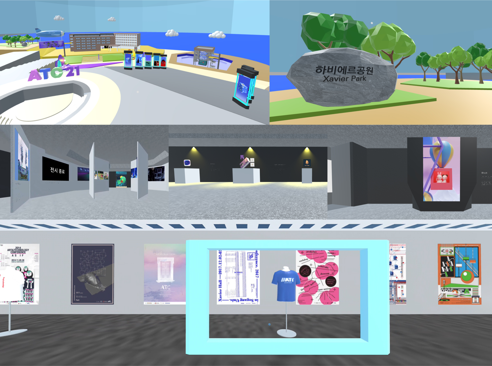

Led market research, including competitor analysis, trend studies, and consumer surveys.
Planned and launched cocktail potion products based on market insights.
Created and released a seasonal mulled wine kit for the Christmas season.
Enhanced website user experience with improved UI/UX design.
Managed branding, including packaging design and brand identity for all products.
Helped secure 430 partner stores and achieve 2 billion KRW in total sales.
"Virtual Space Design for a Complex Conference"
2022 Korea HCI Creative Awards - Featured Project

Designed an interactive virtual space supporting real-time lectures, exhibitions, and networking for the "Quantum Jump: Leap into the Future" Conference.
Recreated the department building and interiors using 3D programs.
Implemented interactivity and user engagement features with Mozilla Hubs Spoke, enabling seamless virtual experiences.
Recognized for excellence in innovation and interactivity in the Creative Awards category.